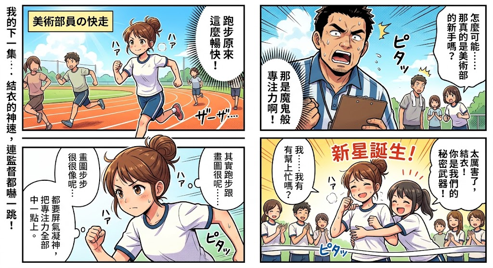

續集特別講述
美術社員の快走
（側邊旁白：我的下一集……結衣的神速，連監督都嚇一跳！）

圖片檔案：photos/漫畫芯嫙.jpg
全 4 格
主語音控制台
Web Speech API
1.0x
100%
第 1 格
結衣（內心）
「跑步原來這麼暢快！」
背景音效：ハア ハア / ザーザー……
第 2 格
監督（震驚）
「怎麼可能……那真的是美術部的新手嗎？」
隊友
「那是魔鬼般的專注力啊！」
背景音效：ピタッ
第 3 格
結衣（眼神堅定）
「其實跑步跟畫圖很像呢……畫圖一步步，都很像呢……都要屏氣凝神，把專注力全部在一點上。」
背景音效：ハア ハア / ピタッ
第 4 格
大合照：新星誕生！
朱音 / 隊友
「太厲害了，結衣！你是我們的秘密武器！」
結衣（害羞）
「我……我有幫上忙嗎？」
背景音效：ハア / ピタッ